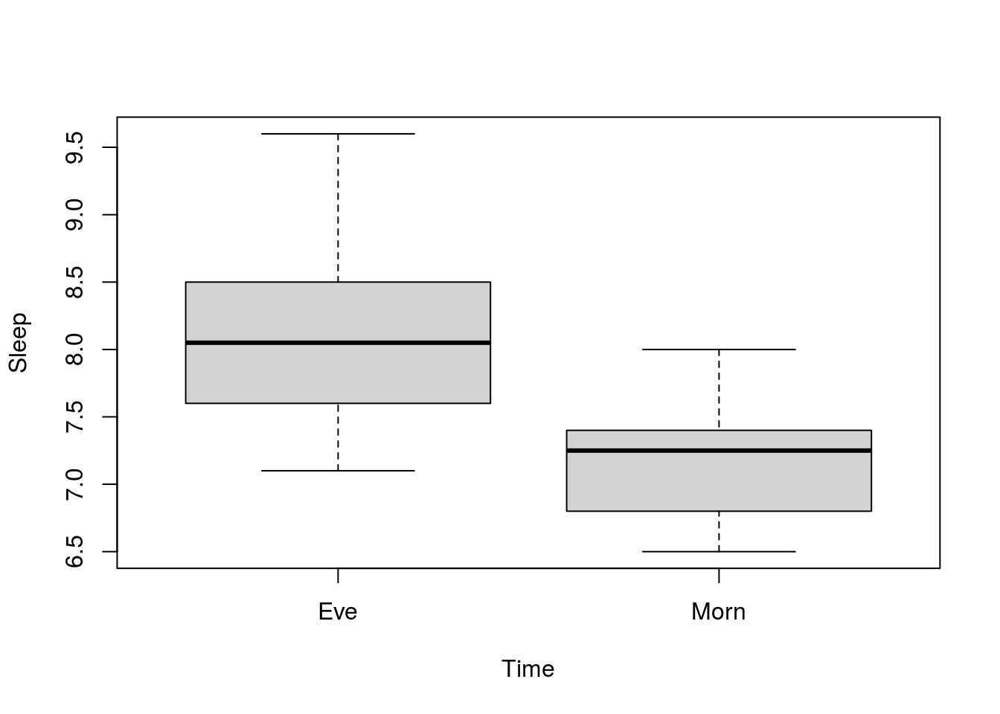
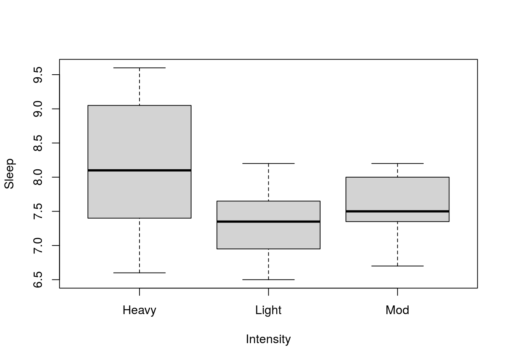
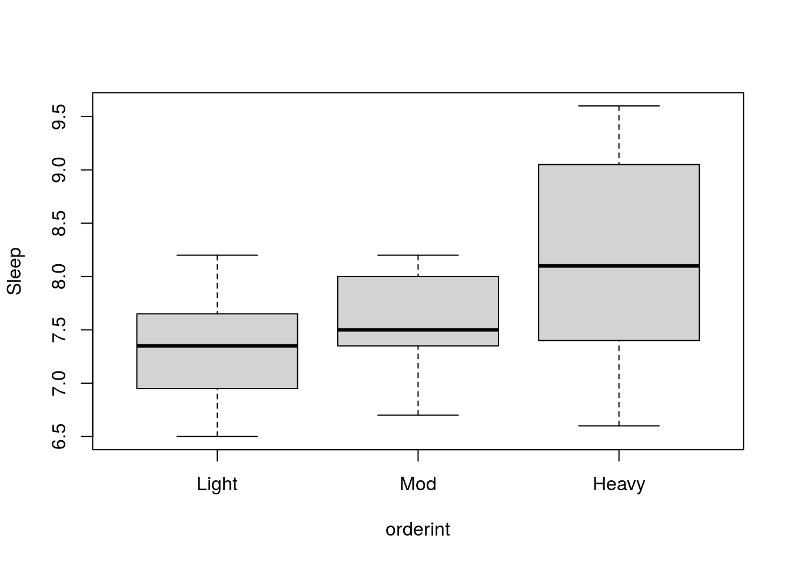
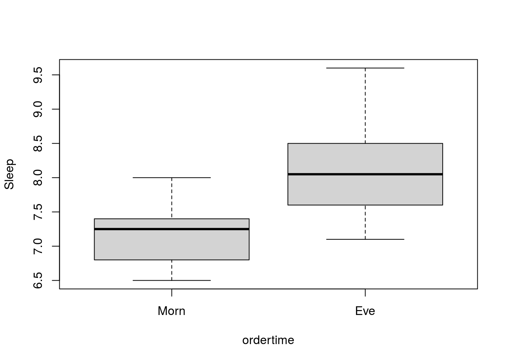
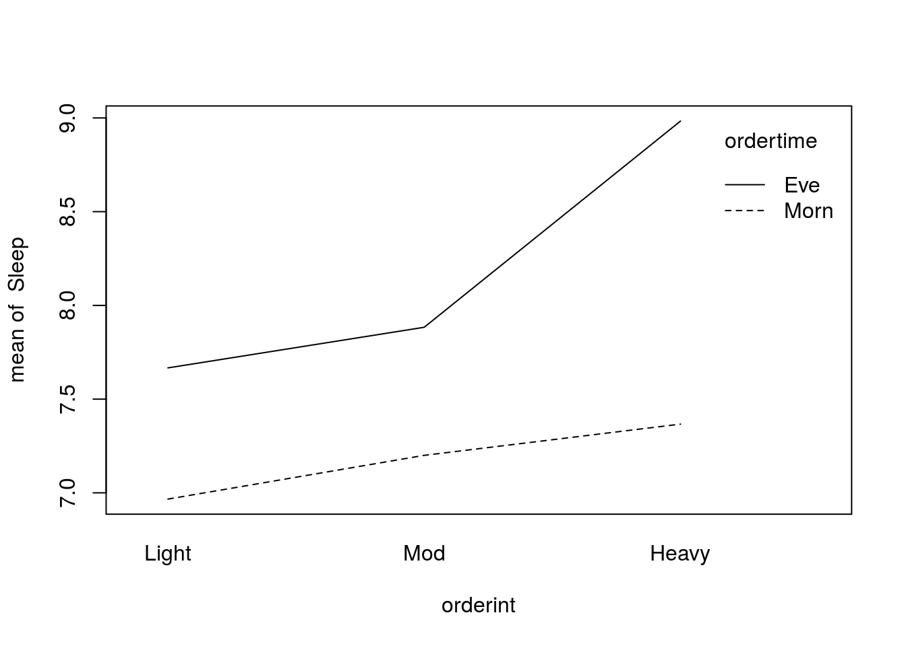

V Two-way ANOVA
by DocP, 08 Jun 2020
This example is based on sample problem 16.1 in Robert Pagano’s Understanding Statistics in the Behavioral Sciences, 10th Edition.
The study looks at the effects of exercise on sleep.
There were two times of day, Morning and Evening, and three exercise conditions, Light, Moderate, and Heavy. This was a completely randomized design, where each subject appeared in only one condition. Thus, we have a 2X3 ANOVA design and can evaluate main effects of Time of Day and Exercise, as well as any interaction that might exist between these two factors.
The data used in this evaluation can be found in the .csv file “ExerciseSleep” in the Data module of our D2L site.
Import and attach the data.
Visualizations
You may want to do box plots of Time and Intensity:
boxplot(Sleep ~ Time)
boxplot(Sleep ~ Intensity)
Note that the order of the factors on the box plots is not very “tidy”. This is not a real issue for the Time plot as there are only two categories but is problematic for the Intensity plot. The order of the factors can be changed using the “factor” and “levels” commands.
orderint <- factor(Intensity, levels = c("Light", "Mod", "Heavy"))
boxplot(Sleep ~ orderint)
Will reorder the Intensity levels .
ordertime <- factor(Time, levels = c("Morn", "Eve"))
boxplot(Sleep ~ ordertime)
Will reorder the time of day.
ANOVA calculations
The “aov”" command will perform the ANOVA, which we will store into an object called tbl. The model specifies that the dependent measure (Sleep) is a function of both grouping factors (Time and Intensity). In addition, the "*" tells R to calculate the effect of the interaction of Time and Intensity.
tbl <- aov(Sleep ~ Time * Intensity)
summary(tbl)## Df Sum Sq Mean Sq F value Pr(>F)
## Time 1 9.000 9.000 48.416 9.93e-08 ***
## Intensity 2 4.754 2.377 12.787 9.63e-05 ***
## Time:Intensity 2 1.712 0.856 4.604 0.018 *
## Residuals 30 5.577 0.186
## ---
## Signif. codes: 0 '***' 0.001 '**' 0.01 '*' 0.05 '.' 0.1 ' ' 1The values in the table should look familiar by this point. The rightmost column tells us the probably of the associated F statistic. We can see from the table that there is a main effect of both Time and Intensity, as well as an interaction between Time and Intensity.
We can plot the data to obtain a visual representation of the interaction.
interaction.plot(orderint, ordertime, Sleep)
will produce a graph which shows the average amount of sleep for Evening and Morning exercisers plotted by intensity of exercise. We can see from the plot both the main effects and the interaction.
We can perform an analysis of the “simple main effect” of time intensity by subsetting the data and running the aov function on each of the subsets.
dmorn <- subset(ExerciseSleep, Time == "Morn", select = c(Sleep, Intensity))
aovMorn <-aov(Sleep ~ Intensity, dmorn)
summary(aovMorn)## Df Sum Sq Mean Sq F value Pr(>F)
## Intensity 2 0.4844 0.2422 1.373 0.283
## Residuals 15 2.6467 0.1764deve <- subset(ExerciseSleep, Time == "Eve", select = c(Sleep, Intensity))
aovEve <-aov(Sleep ~ Intensity, deve)
summary(aovEve)## Df Sum Sq Mean Sq F value Pr(>F)
## Intensity 2 5.981 2.9906 15.31 0.000238 ***
## Residuals 15 2.930 0.1953
## ---
## Signif. codes: 0 '***' 0.001 '**' 0.01 '*' 0.05 '.' 0.1 ' ' 1These analyses suggest that there is a simple main effect of intensity in the evening, but not in the morning.
Tukey HSD tests could be performed for pairwise comparisons L-M, L-H, M-H within the aovEve data set.
Tukey <- TukeyHSD(aovEve)
Tukey## Tukey multiple comparisons of means
## 95% family-wise confidence level
##
## Fit: aov(formula = Sleep ~ Intensity, data = deve)
##
## $Intensity
## diff lwr upr p adj
## Light-Heavy -1.3166667 -1.9794600 -0.6538733 0.0003228
## Mod-Heavy -1.1000000 -1.7627933 -0.4372067 0.0016833
## Mod-Light 0.2166667 -0.4461267 0.8794600 0.6792853The Tukey tests tell us that there is a difference between Light and Heavy exercise, Moderate and Heavy Exercise, but not between Light and Moderate exercise.
While this example has a significant interaction, it is sometimes the case that there is not an interaction. In this case, one can drop the interaction term from the analysis by replacing the "*" with a “+” in the ANOVA formula.
tbl <- aov(Sleep ~ Time + Intensity)
summary(tbl)## Df Sum Sq Mean Sq F value Pr(>F)
## Time 1 9.000 9.000 39.52 4.75e-07 ***
## Intensity 2 4.754 2.377 10.44 0.000324 ***
## Residuals 32 7.288 0.228
## ---
## Signif. codes: 0 '***' 0.001 '**' 0.01 '*' 0.05 '.' 0.1 ' ' 1